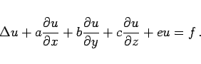
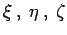
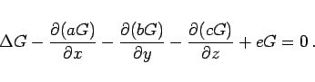
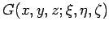
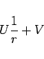
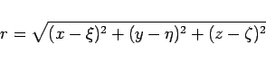
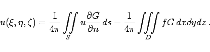

Inhalt Index DeskTop Bronstein

 Differentialgleichungen Partielle Differentialgleichungen Lineare partielle Differentialgleichungen 2. Ordnung Integrationsmethoden für lineare partielle Differentialgleichungen 2. Ordnung
Differentialgleichungen Partielle Differentialgleichungen Lineare partielle Differentialgleichungen 2. Ordnung Integrationsmethoden für lineare partielle Differentialgleichungen 2. Ordnung


Die Lösung der Differentialgleichung
|  | (9.98a) |
soll auf dem Rande des betrachteten Gebiets vorgegebene Werte annnehmen. Dazu wird im ersten Schritt wieder die GREENschen Funktion konstruiert, aber mit dem Unterschied, daß sie nunmehr von den drei Parametern  abhängt. Die konjugierte Differentialgleichung, der die GREENsche Funktion genügt, ist von der Gestalt
|  | (9.98b) |
Als Bedingung 2 wird von  die Form
|  | (9.98c) |
mit
|  | (9.98d) |
gefordert. Die Lösung der Aufgabe lautet
|  | (9.98e) |